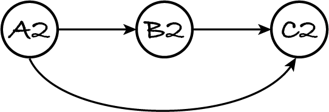

21.3. Topological sort
I mentioned in Section 17.1 that digraphs can represent scheduling constraints: an edge A ⟶ B states that task or event A must occur before task or event B. The example was the evaluation of formulas in spreadsheet cells. Here again is the cell dependency digraph. If cell A2 changes, the spreadsheet must first re-evaluate B2 and only then C2 because C2 depends on A2 and B2.
21.3.1. Problem
Given a digraph, we want to know a possible schedule that indicates in which order to do the tasks or carry out the events represented by the nodes. Such a schedule is called a topological sort of the digraph: it’s a sequence of the graph’s nodes so that for every edge A⟶B, node A appears before node B in the sequence. If you can lay out a digraph so that every edge points from left to right, then a topological sort is obtained by reading the nodes from left to right.
The spreadsheet graph above is laid out from left to right and so has topological sort (A2, B2, C2). That’s the only possible topological sort. For example, sequence (A2, C2, B2) isn’t a topological sort because C2 comes before B2, contrary to the order imposed by edge B2⟶C2.
Some digraphs have multiple topological sorts. For example,
has topological sorts (A, B, C, D), (A, C, B, D), (C, A, B, D), etc. Only the node permutations where B appears before A or D appears before C, like (B, A, C, D) and (D, A, B, C), aren’t topological sorts.
A cyclic digraph, like the following one, has no topological sort.
Any ordering of the nodes will go against one of the edges. For example, (A, B, C) isn’t a topological sort because C must appear before A due to edge C⟶A. No matter which node we choose to start the sequence, some other node must appear before it, so no topological sort is possible. There’s also a visual explanation. A graph with a cycle can’t be laid out with all edges pointing left to right, because there’s always a right-to-left edge to close the cycle.
In summary, every acyclic digraph has at least one topological sort. We want to compute one of them, it doesn’t matter which.
schedule is a permutation of the graph’s nodes
for every edge A⟶B in graph, A appears before B in schedule
Let’s construct the spreadsheet graph for testing.
[1]:
%run -i ../m269_digraph
spreadsheet = DiGraph()
for node in ("A2", "B2", "C2"):
spreadsheet.add_node(node)
spreadsheet.add_edge("A2", "B2")
spreadsheet.add_edge("A2", "C2")
spreadsheet.add_edge("B2", "C2")
21.3.2. Algorithm and code
The key idea to obtain a topological sort is that the first node we visit (the first task we schedule) must not have incoming edges, otherwise it would have to come after some other node. Let’s call the first visited node V.
V has no incoming edges but it may have an outgoing edge V⟶B. Since V was visited first, it will come before all other nodes. The ordering imposed by edge V⟶B is therefore satisfied.
If we remove all outgoing edges from V, to ‘discharge’ those order constraints, nodes that only depend on V will have no incoming edge anymore and can be visited next.
The algorithm thus proceeds by visiting and removing nodes with in-degree zero: those nodes depend on no other node and can be scheduled next. Here’s the outline of what’s known as Kahn’s algorithm:
Create an empty sequence. While there’s a node with in-degree zero, remove it from the graph and append it to the sequence. When the while-loop ends, return the sequence.
It’s a greedy algorithm: at each step it chooses one of the ‘best’ remaining nodes – those without incoming edges.
Let’s see the algorithm in action on the example graph. The next figure shows from left to right how each iteration removes one node and appends it to the sequence. We start with a digraph and the empty sequence. We finish with the empty graph and a topological sort. The numbers next to the nodes are their in-degrees.

This version of the algorithm is not very good as it destroys the input graph. We can instead simulate the removal of nodes and how the in-degrees change. We store the initial in-degree of each node and simulate the removal of an edge A⟶B by decrementing the in-degree value of B. Here’s the new version of the algorithm applied to the example graph. This version only changes the in-degree values associated to the nodes: it doesn’t modify the graph. For example, the removal of A2 and its edges is simulated by decrementing the in-degrees of B2 and C2.
Kahn’s algorithm can be reformulated as follows:
Create an empty sequence. Compute and store the in-degree of each node. Put all zero-degree nodes in a collection of nodes to visit. While the collection isn’t empty, remove one node from it, append the node to the sequence and decrement the in-degree of the node’s out-neighbours. If an out-neighbour’s degree becomes zero, add that out-neighbour to the nodes to visit. When the while-loop ends, return the sequence.
The collection of nodes to visit can be a set, queue or stack. The latter is the most efficient in terms of memory and run-time.
[2]:
%run -i ../m269_stack
[3]:
# this code is also in m269_digraph.py
def topological_sort(graph: DiGraph) -> list:
"""Return a topological sort of graph.
Preconditions: graph is acyclic
Postconditions:
- the output is a permutation of the graph's nodes
- for every edge A -> B, node A appears before B in the output
"""
schedule = []
# compute the initial in-degrees
indegree = dict()
for node in graph.nodes():
indegree[node] = 0
for edge in graph.edges():
indegree[edge[1]] = indegree[edge[1]] + 1
# compute the nodes that can be visited first
to_visit = Stack()
for node in graph.nodes():
if indegree[node] == 0:
to_visit.push(node)
while to_visit.size() > 0:
visited = to_visit.pop()
schedule.append(visited)
# simulate the removal of the visited node
for neighbour in graph.neighbours(visited):
indegree[neighbour] = indegree[neighbour] - 1
if indegree[neighbour] == 0:
to_visit.push(neighbour)
return schedule
[4]:
topological_sort(spreadsheet)
[4]:
['A2', 'B2', 'C2']
21.3.3. Complexity
The algorithm always goes through the whole graph and adds all nodes to the output sequence, so there’s no best- or worst-case scenario. The complexity can be broken down as follows:
Go through the graph to construct the in-degree map: Θ(n + e).
Do a linear search for the nodes with in-degree zero: Θ(n).
Add each node to the
to_visitset, remove it from the set and append it to the sequence: Θ(n).For each node, go through its out-neighbours: Θ(e), because visiting all neighbours of all nodes goes through all edges.
The complexity is given by the fastest-growing term: Θ(n + e).
21.3.4. Exercises
The following exercises show a different application of Kahn’s algorithm and ask you to consider the efficiency of alternative algorithms.
Exercise 21.3.1
Alice remembers that the DiGraph class has a method to compute the in-degree. She simplifies the topological_sort code as follows. (The rest of the function remains the same.)
indegree = dict()
to_visit = set()
for node in graph.nodes():
indegree[node] = graph.in_degree(node)
if indegree[node] == 0:
to_visit.add(node)
Is this more efficient than the original, unmodified code?
Exercise 21.3.2
What happens if we ignore the preconditions of topological_sort and provide as input a cyclic digraph? Does the function stop with an error? Does it enter an infinite loop? If neither of those cases happen, what is the output?
Exercise 21.3.3
Based on the previous exercise, write and test a function that checks if a digraph is cyclic.
[5]:
from algoesup import test
def is_cyclic(graph: DiGraph) -> bool:
"""Return True if and only if the graph has a cycle."""
pass
digraph = DiGraph() # from Section 21.2.1
for node in "ABCDEF":
digraph.add_node(node)
for edge in ("AB", "BC", "CA", "DE"): # cycle A -> B -> C -> A
digraph.add_edge(edge[0], edge[1])
is_cyclic_tests = [
# case, graph, is cyclic?
('has cycle', digraph, True),
('no cycle', spreadsheet, False)
]
test(is_cyclic, is_cyclic_tests)
What’s the worst-case scenario for your algorithm to decide whether a digraph is cyclic? What’s the worst-case complexity?
Exercise 21.3.4
Looking at the tests above, Bob realises a digraph is cyclic if and only if it has a strongly connected component with two or more nodes. He adapts the algorithm for computing the strongly connected components as follows:
When computing the intersection of the forward and backward sets of nodes, check if the intersection’s size is larger than 1. If so, immediately return true: the digraph is cyclic. Otherwise continue the algorithm as normal. Return false after the loop goes through all nodes: the digraph is acyclic because each component has one node only.
Explain why a cyclic digraph has a strongly connected component with more than one node.
What’s the worst-case complexity of Bob’s algorithm? Is it worth using his algorithm instead of Kahn’s to check for cycles?